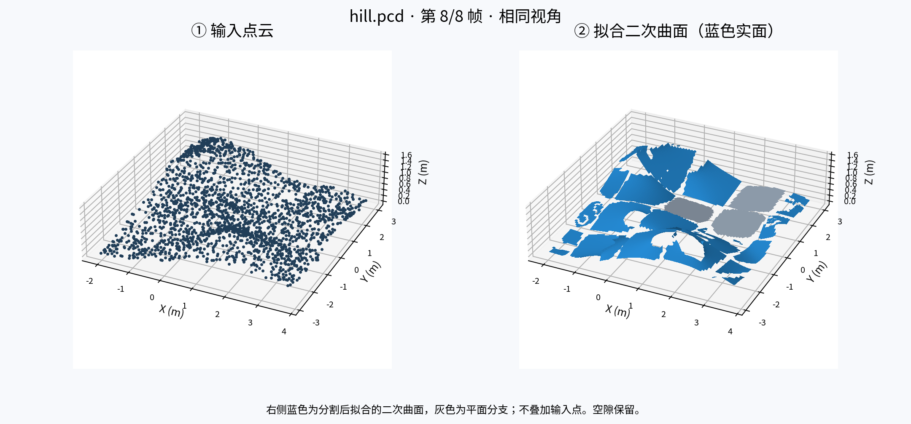

← 地形测试报告
看见拟合的二次曲面
下面右图的蓝色实面就是拟合结果。下方三维视图默认显示曲面，可切换点云对照。
放大拟合对照图 ↗
丘陵示例：输入点云 → 拟合曲面
同一帧、同一视角 · 点击图片放大

蓝色块是各个分割面片拟合出的二次曲面；面片之间保留空隙。下方可旋转或单独放大一个面片。
交互查看
① 输入点云
② 拟合实面
③ 叠加对照
④ 放大局部二次曲面
查看整体
场景
观测帧
显示方式
拟合实面（无点云）
曲面 + 点云
仅原始点云
残差着色 + 曲面
分割面片 + 曲面
面片
全部面片
只看选中面片
立体
侧面
俯视
正在读取拟合结果…
拟合实面 · 蓝色二次曲面 / 灰色平面
观测点
二次曲面
平面分支
选中面片
未分配点
0
2
5
≥10 cm
Taubin 近似距离 |F| / ‖∇F‖